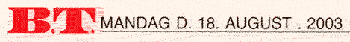
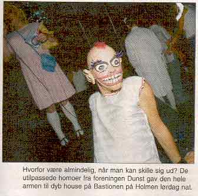
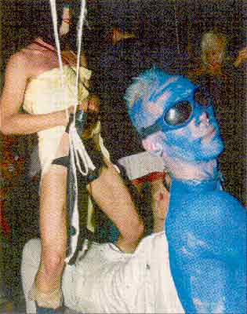

   |
| Sat op til narrestreger Ude på Holmen holdt de utilpassede homoer fra foreningen dunst deres helt egen fest på Bastionen. Ved to-tiden i nat ver der ifølge dørmanden solgt omkring 450-500 billetter. Håret og kroppen var vikelig sat op til narrestreger. Her kunne man skue ringe i næsen, i brystvorter og diverse andre steder, folk bar masker og dansede til tunge house-rytmer lige til kl. otte i går morges. Drags var der til gengæld ikke mange af. De synes at være en uddøende racce. Og de morgenduelige sluttede som sædvanligt natten/morgenen af med en sidste øl på Cosy Bar. De heldige kunne gå hjem med en ny "livs" ledsager i hånden... fhkbt.dk |
|
Print denne side |